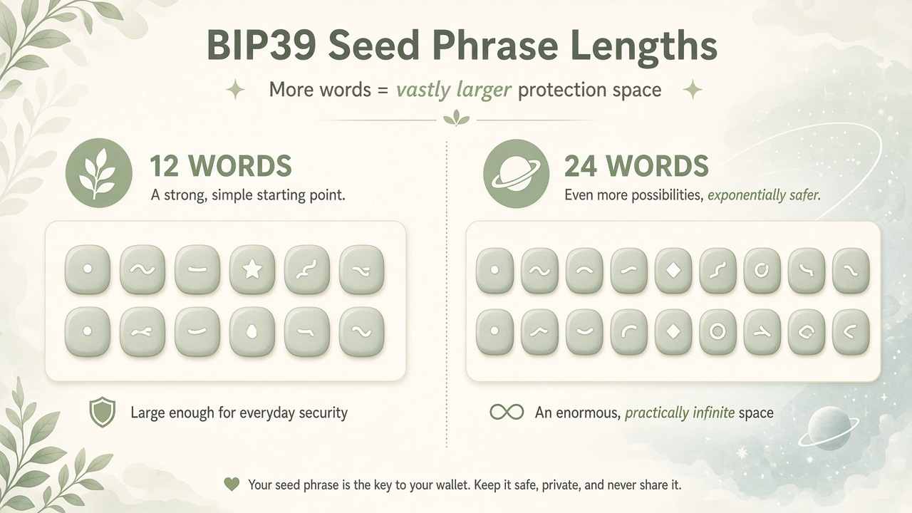

12 words
≈ 2128 ≈ 3.4×1038
Already larger than a casual “sand × stars × cells” story.
Teach process only. This site never generates SSH keys, Bitcoin seeds, or recovery phrases. Do not type a real private key or seed into any website — including this one.
BIP39
BIP39 maps a long secret to words from a 2048-word list so a human can write it on paper. The security is in how that secret was chosen — and in never showing the words to a website. This page will not invent a phrase for you.

The English BIP39 list has 2048 words (11 bits per word). A 12-word phrase carries about 128 bits of entropy. A 24-word phrase carries about 256 bits. Those are the same magnitudes as on the entropy page.
≈ 2128 ≈ 3.4×1038
Already larger than a casual “sand × stars × cells” story.
≈ 2256 ≈ 1.2×1077
About 2128× more possibilities than 12 words — not 2×.
Going from 12 to 24 words is not “twice as strong.” Adding 128 bits multiplies the haystack by about 2128 (~1038×). That is another full 12-word universe.
Not every random list of 12 or 24 dictionary words is a valid BIP39 phrase. A small checksum is folded into the last word so wallets can catch a typo. That is a kindness for humans. It is not extra secrecy, and it is not something you should “fix” by typing words into a website to see if they check out.
Some people gather randomness with physical dice before they use a wallet, so the secret does not begin life on a networked computer. Casino-style dice are popular because faces are easier to read and the dice are built to be fair. A 5-pack is enough for base-6 workflows; people often buy two sets (10 dice) to roll faster.
This site does not convert rolls into words, does not host a wordlist picker, and does not verify a phrase. If you use dice, the mapping happens on tools and paper you already trust — offline — not in this browser.
No generator lives here. There is no form below this paragraph. If you came looking for a page that prints a seed, you are in the wrong place — on purpose.